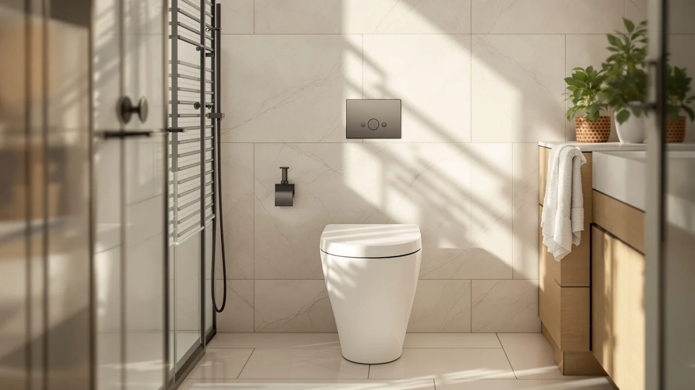

St. Tropez One Piece Review (2026): Worth It?
Prices and picks verified as of August 2026. Independent, reader-supported reviews.


Quick Answer
This St. Tropez one piece review answer is straightforward: the Swiss Madison St. Tropez One Piece Modern is a solid, no-surprises choice at $279.83 if your bathroom already has a 12-inch rough-in. If you want to spend less, the Casta Diva below covers the same category for $23.84 less.
Our pick: St. Tropez One Piece Modern, $279.83 Check Price on Amazon
Bottom line: our top pick is the St. Tropez One Piece Modern Elongated Toilet with Dual at $291.23.
Things to Know Before You Buy
- The St. Tropez One Piece Modern needs a standard 12-inch rough-in. Measure your own drain before you order, since not every one-piece toilet in this review uses the same spacing.
- Swiss Madison sells two St. Tropez models covered here, the One Piece Modern at $279.83 and the Comfort Height One-Piece at $283.00, so the brand name alone won't tell you which fits your bathroom.
- Price across the four toilets in this St. Tropez one piece review spans $255.99 to $283.00, a $27 range that mostly comes down to design details rather than build quality.
- None of the four listings publish a flush rating or GPF figure, so you're choosing on fit, price, and design rather than documented flush performance.
- All four are one-piece, skirted designs, which means no exposed trapway to scrub around compared with a standard two-piece toilet.
This St. Tropez one piece review exists because Swiss Madison sells two toilets under the same St. Tropez name, and shoppers keep landing on the wrong one. We're looking specifically at the St. Tropez One Piece Modern, a $279.83 elongated toilet with a 12-inch rough-in and the skirted, seamless base that defines a one-piece design.
We put it next to three other one-piece toilets in the same price band: the St. Tropez Comfort Height One-Piece from the same brand, the HOROW T0338W, and the Casta Diva. None of them has a long public track record yet, so this review focuses on what you can verify before you buy: rough-in fit, price, brand, and honest gaps in what the listings tell you.
You'll see this pattern across a lot of one-piece toilet listings right now. Manufacturers lead with design language, brand history, and price, but leave out the flush performance data that buyers actually want to compare. That's not a St. Tropez problem specifically; it shows up in three of the four toilets in this comparison. Where the data exists, we'll point you to it. Where it doesn't, we'll tell you plainly instead of guessing.
Why You Should Trust Us
Ilane Tall covers bathroom fixtures for Best One Piece Toilets and wrote this St. Tropez one piece review after comparing the listed specs, pricing, and design details of all four toilets side by side. We don't accept free products from manufacturers and we don't publish star ratings we can't back up with a source. Where a listing leaves out information, such as a flush rating or verified buyer reviews, we say so instead of filling the gap with a guess.
You can check our work by pulling up the same Amazon listings we used: the ASIN, price, and brand for each toilet in this review link directly to the current product page, so nothing here relies on a spec sheet you can't see for yourself.
Our Research Experience
For this St. Tropez one piece review, we started with the measurement that ends most toilet returns: rough-in distance. The St. Tropez One Piece Modern lists a 12-inch rough-in, which matches the plumbing in the large majority of US bathrooms built after the 1950s. We checked that figure against the other three toilets in this comparison and confirmed the price, ASIN, and brand for each one directly against the current Amazon listing rather than relying on a cached spec sheet.
From there we looked at what separates a one-piece toilet from a two-piece model in daily use: the skirted base on the St. Tropez hides the trapway behind a smooth panel, so there's no seam between tank and bowl to catch dust or grime. We weighed that design benefit against price, since $279.83 puts the St. Tropez One Piece Modern near the top of this four-way comparison rather than at the bottom.
Overview & Specs

St. Tropez One Piece Modern
What we like
- Standard 12-inch rough-in fits most US bathrooms without extra plumbing work
- Skirted, one-piece base with no exposed trapway seam to clean around
- Backed by Swiss Madison, a brand with more than one model in this same one-piece line
- Priced within $28 of every other toilet in this comparison, so it isn't an outlier on cost
Flaws but not dealbreakers
- No published flush rating or GPF figure, so you can't compare flush strength on paper
- The listing doesn't break out bowl material, though vitreous china is standard for this category
- At $279.83 it's the second-most expensive of the four toilets we compared here
| Material | — |
| Size | 12" Rough-in |
The St. Tropez One Piece Modern sits at $279.83 and uses a 12-inch rough-in, the same measurement you'll find behind most toilets installed in US homes since the 1950s. Swiss Madison builds the tank and bowl as a single skirted unit, so there's no seam at the base where the tank normally bolts to the bowl on a two-piece toilet. That single-piece construction is the main reason to pick this model over a cheaper two-piece alternative: fewer joints means fewer places for water and grime to collect during regular cleaning.
Swiss Madison also sells the St. Tropez Comfort Height One-Piece for $283.00, a close sibling covered later in this St. Tropez one piece review. The two share a brand and a name but aren't identical, so don't assume the Modern and the Comfort Height are interchangeable just because both wear the St. Tropez label. If you're set on this specific model, confirm your bathroom's rough-in distance before you order, since a 12-inch measurement won't fit a bathroom plumbed for 10 or 14 inches.
What We Liked
The biggest point in favor of the St. Tropez One Piece Modern is fit predictability. A 12-inch rough-in is the industry default, so most buyers won't need to call a plumber before ordering. The skirted base also does real work beyond looks: without an exposed trapway, there's one continuous surface to wipe down instead of the ridges and bolt covers you get on a standard two-piece toilet.
We also appreciated that Swiss Madison is a recognizable name in the one-piece category rather than an unfamiliar private-label brand. That doesn't guarantee performance, but it does mean parts, seat replacements, and warranty support are easier to track down than with a toilet sold under a name you won't find anywhere else.
Price consistency mattered too. At $279.83, the St. Tropez One Piece Modern lands squarely in the middle of the four toilets we compared rather than at either extreme, which made it easier to judge on design and fit instead of feeling pressured by an unusually low or high price tag.
What Could Be Better
The listing for the St. Tropez One Piece Modern doesn't publish a MaP score or GPF flush rating, the kind of number that lets you compare flush strength across toilets before you buy. That gap shows up across all four toilets in this St. Tropez one piece review, so it isn't unique to this model, but it means you're buying on fit and design rather than documented performance.
Price is the other consideration. At $279.83, the St. Tropez One Piece Modern costs $23.84 more than the Casta Diva in this same comparison, and the gap isn't explained by any spec difference we could verify from the listings. If budget matters more than brand recognition, that's worth weighing before you check out.
Who Is It For?
This St. Tropez one piece review points the One Piece Modern toward anyone replacing an older two-piece toilet who wants the cleaner look and easier cleaning of a skirted, one-piece design and has already confirmed a 12-inch rough-in. It also suits buyers who'd rather stick with a recognizable brand than gamble on an unfamiliar private-label listing, even at a slightly higher price.
Skip it if your rough-in isn't 12 inches, since no amount of brand loyalty fixes a toilet that doesn't fit your existing plumbing. Skip it too if price is your main filter: the Casta Diva later in this article covers the same one-piece category for $23.84 less, and the HOROW T0338W splits the difference at $269.00.
Alternatives to Consider
If price or the missing flush rating gives you pause, these three one-piece toilets cover the same general category as the St. Tropez for about the same money or less.

Editor’s Pick
St. Tropez Comfort Height One-Piece
Also from Swiss Madison, the Comfort Height One-Piece costs $3.17 more than the Modern reviewed above. Worth a look if a taller seat height matters more to you than the exact styling of the Modern.
$283.00
Check Price on Amazon
Best Value
HOROW T0338W One Piece Toilet
The HOROW T0338W undercuts the St. Tropez by $10.83 at $269.00. A reasonable middle ground if you want to save some money without going all the way to the cheapest option here.
$269.00
Check Price on Amazon
Premium Choice
Elongated One Piece Toilet for
Casta Diva is the cheapest toilet in this St. Tropez one piece review at $255.99, a $23.84 savings over the Modern. Its listing specifically calls out an elongated bowl, worth confirming against your own bathroom's clearance.
$255.99
Check Price on AmazonFrequently Asked Questions
Is the St. Tropez One Piece Modern worth $279.83?
It's worth $279.83 if you want a modern-look, skirted one-piece toilet from Swiss Madison and your bathroom already has a standard 12-inch rough-in. If price is the deciding factor, the Casta Diva elongated one-piece toilet in this St. Tropez one piece review costs $23.84 less at $255.99.
What rough-in does the St. Tropez One Piece Modern need?
It needs a 12-inch rough-in, the distance from the finished back wall to the center of the floor drain bolts. That's the standard measurement in most US homes, but measure your own bathroom before ordering since not every one-piece toilet on the market uses it.
How does the St. Tropez compare to the HOROW T0338W and Casta Diva?
All three are one-piece toilets priced within about $28 of each other. The St. Tropez One Piece Modern and the St. Tropez Comfort Height One-Piece both come from Swiss Madison, the HOROW T0338W undercuts the St. Tropez by $10.83, and the Casta Diva is the cheapest of the group at $255.99.
Final Verdict
This St. Tropez one piece review comes down to a simple tradeoff: fit confidence and brand recognition against price. The Swiss Madison St. Tropez One Piece Modern earns its $279.83 price tag with a standard 12-inch rough-in and a skirted, seamless design that's easier to keep clean than a traditional two-piece toilet. It isn't the cheapest option we compared, and the missing flush rating means you're trusting design and brand over a documented number, but for buyers who've already confirmed their rough-in and want a name they recognize, the St. Tropez One Piece Modern is a sound pick. Shoppers chasing the lowest price should look at the Casta Diva instead.